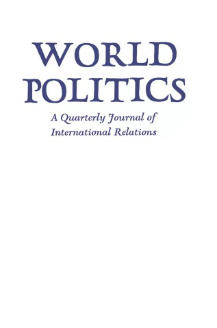
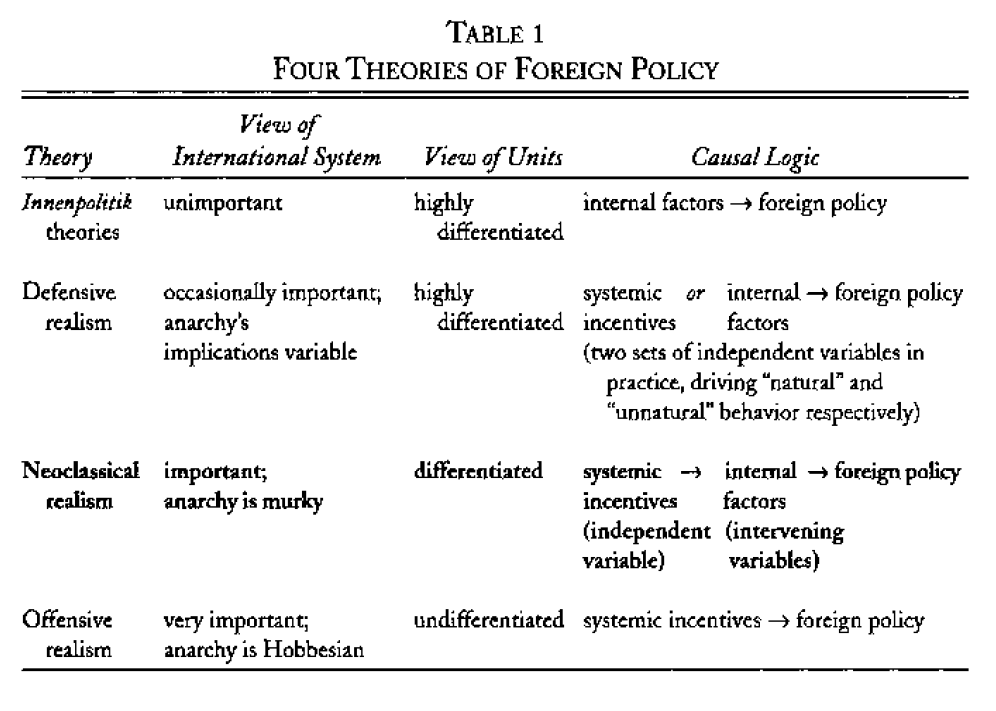
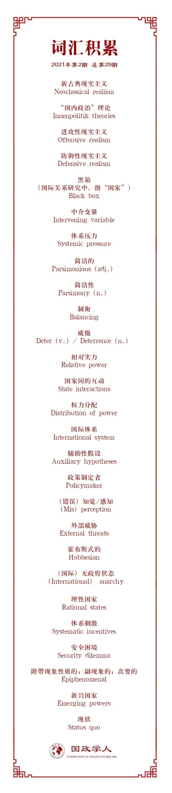

收录于合集 #理论研究 96个

作品简介
【作者】 Gideon Rose, 2010年到2021年间担任《外交事务》杂志主编。美国对外关系委员会（Council on Foreign Relations）杰出研究员，曾在该委员会中担任国家安全研究项目副主任（1995—2000）；曾在克林顿政府的国家安全委员会（National Security Council）中担任近东与南亚事务副主任（1994—1995）；曾担任普林斯顿大学和哥伦比亚大学讲师，讲授美国对外政策课程。他著有《战争如何结束》（How Wars End）一书。其研究领域包括：国际冲突；中东、波斯湾和南亚；恐怖主义；以及经济制裁。
【编译】 阮镇炜（国政学人编译员，伦敦大学学院安全研究硕士）
【校对】 赵婧如、晋玉
【审核】 丁伟航
【排版】 石寒冰
【美编】 游钜家
【来源】 Rose, G. (1998) ‘Neoclasscial Realism and Theories of Foreign Policy’, World Politics , 51(1), pp. 144-172
【归档】 《国际关系前沿》2021年第2期，总第29期。
期刊简介

World Politics（《世界政治》）创刊于1948年，是享誉国际的政治科学季刊，内容涵盖国际关系和政治科学的各个领域，其主编是Deborah J. Yashar。该期刊欢迎的投稿类型有具有理论和实证贡献的研究类文章，以及有关国际关系和比较政治问题的评论性文章。2019年该期刊的影响因子为2.5，在95种国际关系类期刊中位列第15名，在180种政治科学类期刊中位列第36名。
**新古典现实主义与对外政策理论 ******
Neoclassical Realism and Theories of Foreign Policy
Gideon Rose
内容提要
对国际政治理论的讨论已经占据了国际关系理论的很大一部分，但最近学者们对对外政策理论越来越感兴趣。 对外政策理论试图解释国家的行为，而不是国家间互动的结果之规律。 作者审视了三种重要的对外政策理论，并展示他所评论的作品如何阐述一种有力的新理论。这种新理论更新了从古典现实主义思想中汲取的见解并将其系统化。 新古典现实主义认为一个国家的相对物质实力是影响该国对外政策的能力和目标的首要因素。 然而，物质实力对对外政策的影响是间接的、复杂的，因为体系压力必须通过单元层次的中介变量（比如，决策者的感知和国家结构）而得以转化。因此，要理解实力与政策之间的联系，就要仔细研究对外政策形成与实施的国际和国内环境。
文章导读
国际关系理论被新现实主义者与其各种批判者之间的争论主导了二十年。许多争论都围绕着国际体系的本质及其对国际结果（如战争与和平）的影响等问题上。新现实主义试图解释国家互动的结果，所以它是一种国际政治理论。它包含一些关于国家个体的动机的基本假定，但并不试图详细或完全解释国家的行为。因此，大部分国际关系的日常事情则需要由对外政策理论解释。 这些理论把国家个体的行为看作因变量，而不是把国家间互动结果的规律看作因变量。 对外政策理论寻求解释国家试图在外部领域实现什么以及他们试图在何时实现。但是，在这个层次上的理论发展尚未得到太多关注。
沃尔兹等人因其复杂性而直接把这个理论课题排除在外。沃尔兹认为，理论必须处理“自主领域”（autonomous realm）的连贯逻辑。由于对外政策由内部因素和外部因素共同驱动，它并不构成一个自主领域，所以我们不应该寻求一个真正的理论解释。相反，我们必须满足于纯粹的“分析”或“描述”，而这些“分析”或“描述”包含任何看似与某个特定研究案例相关的任何因素。其他人则反对这种看法，并尝试构建对外政策的一般性理论，其可分为几个广泛的流派。
第一个流派，也是最常见的流派，由“国内政治”理论（Innenpolitik theories）组成。这个流派强调国内因素对对外政策的影响。其余两个流派都是现实主义的变体，强调国际体系对国家行为的影响。“进攻性现实主义”（Offensive realism）本质上把“国内政治”理论流派的逻辑颠倒过来，认为体系因素总是占主导地位。“防御性现实主义”（Defensive realism）稍微柔和一点，认为在实践中体系因素驱动着某些国家行为，而非所有国家行为。【译者注：作者在这里是从对外政策理论的角度理解进攻性和防御性现实主义】
本文所评述的著作阐述了第四个流派，作者称之为 “新古典现实主义”（Neoclassical realism）。新古典现实主义融合了外部因素和内部因素，更新了某些从古典现实主义思想中汲取的见解并对其进行了系统化。它之所以是现实主义的 ，是因为其认为一个国家的对外政策的能力和目标首先是由这个国家在国际体系中的地位驱动的，更具体地说，是由国家的相对物质实力驱动的。 它之所以是新古典的， 是因为其认为这些物质实力对对外政策的影响是间接的和复杂的，体系压力必须通过单元层次的中介变量而得以转化。
新古典现实主义者认为相对物质实力是一个国家对外政策的基本参数。但是，他们也指出物质实力与对外政策行为之间并没有即时的或完美的传送带（transmission belt）。 对外政策选择是由政治领导人和精英作出的，所以，重要的是他们对相对实力的认知，而不是国家现有物质资源或军事力量的相对数量。再者，政治领导人和精英并不总是拥有随心所欲地运用和分配国家资源的自由。因此，实力分析必须同时考察国家与社会的相对力量和结构，因为这些会影响分配到对外政策上的国家资源的比例。这意味着有同等实力但有不同国家结构的国家可能会有不同的行为。最后，体系压力和刺激可能塑造对外政策的大致轮廓及其总体方向，但难以决定国家行为的具体细节。
综合以上三个原因，新古典现实主义者相信， 要理解实力与政策之间的联系，就要仔细研究对外政策形成与实施的国际和国内环境。
01
四种对外政策理论
最常见的方法是假定对外政策源于国内政治。这些“国内政治”理论（Innenpolitik theories）认为政治与经济意识形态、民族性格、政党政治或社会经济结构等内部因素决定国家如何与他国进行互动。 比如，民主国家的行为不同于非民主国家；民主国家与民主国家打交道时的行为很不一样，一个民主国家极少对另一个民主国家发动战争（民主和平论）。“国内政治”理论有很多变体，每一种变体都倾向于一个不同的具体的国内自变量，但它们都有一个共同的假定：对外政策最好被理解为一个国家内部动态的产物。因此，要理解为什么某个国家正以某种方式行动，就应该要窥探“国家”这个黑箱，并剖析国内行为体的偏好和结构。
“国内政治”理论最主要的问题在于，单纯的单元层次变量难以解释为什么国内体制相似的国家经常有不同的对外政策行为，也难以解释为什么不同国家处于相似情况时经常会有相似行为。 为了逃避这个问题，一些学者尝试把国际政治的新现实主义应用于国家个体的行为以及国际结果上。他们分别产生了两种对外政策理论。
一种是进攻性现实主义。 该理论假定国际无政府状态是霍布斯式的。在进攻性现实主义的世界里，追求安全的理性国家倾向于采取会导致与其他国家发生冲突的行动。国家之间的内部差异被认为是不太重要的，因为不管国家的内部特征如何，来自国际体系的压力被认为强大到足以使处于相似情况下的国家采取相似的行动。进攻性现实主义者认为，要理解为什么一个国家以某种特定的方式行事，就应该考察这个国家的相对实力及其外部环境，因为这些因素将相对平稳地转化为对外政策，并影响这个国家选择推进其利益的方式。
另一种是防御性现实主义。 该理论假定国际无政府状态是更为良性的，即安全总是充足的而不是缺乏的。在防御性现实主义的世界里，追求安全的理性国家经常都可以处于放松的状态，只有需要应对外部威胁时才会紧绷，但这种情况很少见。即使面临外部威胁，这样的国家也会及时通过“制衡”（balancing）去应对，以威慑威胁者并避免冲突。但这个规则有例外，那就是当某种情况导致寻求安全的国家相互恐惧时，比如，当主流的作战模式有利于进攻方时。从这个角度看，对外政策活动记录了理性国家是如何恰如其分地应对清晰的体系刺激，而只有在安全困境白热化的情况下，国家才会陷入冲突。
对外政策的“国内政治”理论优先考虑国内自变量，而进攻性现实主义优先考虑体系自变量。防御性现实主义则被认为是一个体系理论，但在实践中，防御性现实主义者依赖体系和国内自变量去解释不同种类的对外政策行为。他们把国际体系看作“自然”行为的起因，这包括诉诸武力（只有当军事技术或某些其他明显的因素刺激国家去打第一枪时）。他们认为其他的侵略行为都是“非自然的”，并通过含有国内变量的辅助性假设（auxiliary hypotheses）予以解释。
新古典现实主义者认为“国内政治”理论者（Innenpolitiker）偏爱的自变量必须降到第二位，因为长期来看，一个国家的对外政策不能脱离国际环境产生的限制和机会。 再者，因为结构性因素（如相对实力）的影响对政治行为者来说并非总是明显的，所以新古典现实主义者提醒道，那些不从结构性因素影响入手的学者可能会错误地把因果意义赋予给其他因素，虽然这些因素更明显，但在现实中只是次要的。
新古典现实主义者把“相对实力”作为主要的自变量， 这使他们面临如何定义这个概念以及如何将其可操作化的问题。他们认为“power”是指“国家能够用于影响他国的能力或资源”。他们把实力资源（power resource）与一个国家的对外政策“利益”区分开，而对外政策利益指的是指导该国外部行为的目标或偏好。
新古典现实主义者假定国家通过管控和塑造外部环境来对国际无政府状态的不确定性作出回应。 他们认为，国家很可能想要更多而不是更少的对外影响力，并根据实力去追求这种影响力的最大化。随着相对实力的提高，国家将会寻求更多的对外影响力；随着相对实力的下降，国家的行为和目标将会相应地收缩。
新古典现实主义者认为，要理解国家如何解读和回应外部环境，就必须分析体系压力是如何通过单元层次的中介变量（如决策者的感知和国家结构）而被转化的。 领导人既可能受制于国际政治，也可能受制于国内政治。再者 ，国际无政府状态既不是霍布斯式的，也不是良性的，而是模糊的，且难以解读。 因此，国家难以清楚地判断安全是否充足，他们只能在黑暗中摸索着前进，根据自己的主观经验解读不完整且有问题的证据。
因此，新古典现实主义者占据了结构主义者和建构主义者之间的中间地带。他们假定相对实力的客观现实的确存在，它对国家互动的结果有强烈影响。然而，他们没有假定国家必然能每天都准确理解这种客观现实。
（四种对外政策理论的总结请看表1）

02
大国兴衰
本文评论的新古典现实主义著作的首要话题是相对实力对对外政策的影响，这使它们成为该话题的第三代著作。第一代著作出现在20世纪80年代，比如Robert Gilpin，Paul Kennedy和Michael Mandelbaum的著作，他们都把相对实力用作组织原则，对一些国家进行广泛且深刻的国际政治研究。他们认为，在明显混乱的事件之下，潜藏着重大规律。比如，当一个国家的实力等级发生改变，他的对外政策也会随之变化。第二代由Aaron L. Friedberg和Melvyn P. Leffler的著作组成，他们研究了相对实力的改变如何导致一个特定国家对外政策的改变。
新古典现实主义者在前两代著作的基础上，对其没触及的地方进行补充，并展示了他们的分析如何应用于不同时间和国家。在《从财富到权力》（ From Wealth to Power ）中，Fareed Zakaria提出一个问题：“随着国家的财富日益增长，为什么他们建立更多部队，卷入别国内政，并寻求国际影响力？”Zakaria的回答与第一代著作提供的答案相呼应，他认为，这些行为源于一种倾向，即国家运用他们所掌握的工具去获取对环境的控制权。William Curti Wohlforth认为“国家行为是相对实力发生改变的条件下对外部约束的一种适应。”从这点出发，他分析了冷战期间苏联的对外政策。Thomas J. Christensen在《有用之敌》（ Useful Adversaries ）中主张，冷战初期美国和中国的对外政策首先是由国际体系中权力分配的改变而驱动的。在《致命的不平衡》（ Deadly Imbalances ）中，Randall Schweller认为传统的观点——希特勒个人性格和世界观导致了二战的发生——是错误的。Schweller主张，国际体系的结构（即单元之间物质实力的分配）对20世纪三、四十年代期间的联盟模式和对外政策有关键影响，这很大程度上解释了二战的发生及其经过。
03
国际政治中的知觉与错误知觉
为了强调相对实力的首要地位，新古典现实主义者与“国内政治”理论者部分融合。但是，他们也与许多其他的结构主义者割离，因为他们进一步主张，相对实力对政策的影响是间接的，而且存在问题。 他们引入的第一个中介变量是决策者的知觉 ，这势必对体系压力进行过滤。
对于对外政策的纯粹的体系解释假定：官员对权力分配有相当准确的理解，并且这些理解比较直接地转化成国家政策。 新古典现实主义则相反，他们认为，一个平稳运行的传送带（transmission belt）是不准确的，而且有误导性。国际权力分配只有通过影响有血有肉的官员的决定时，才能驱动国家的行为。 所以，未来的对外政策学者只能详细探究每一个国家的政策制定者如何理解他们面临的状况。
一些新古典现实主义者把知觉作为研究的核心。例如，在《捉摸不透的平衡》（ The Elusive Balance ）中，Wohlforth认为20世纪40年代到80年代反复出现的超级大国紧张关系都十分相似，都根植于相对实力以及政策制定者对其感知的模糊性。此外，Zakaria和Christensen在书中也强调了知觉“冲击”（perceptual “shocks”）的重要性。在知觉冲击下，各种独立事件突然间使决策者意识到长期的、渐进的实力趋势所带来的聚积效应。最后，Schweller在其书中主张，在二战初期，是对权力分配的错误知觉驱动了国际体系其中一极的对外政策。
04
国家的回归
新古典现实主义者强调的第二个中介变量是国家机器的力量及其与社会的关系。 他们认为，对国际权力分配的总体评估是不充分的，因为国家领导可能很难有机会了解一个国家所有的物质实力资源。由此，国际实力分析必须考虑政府运用和分配其社会资源的能力。
一战之前，尽管美国可能已经成为世界上最富裕的国家，美国多次放弃了扩张其海外影响力的机会。尽管后来变得更加积极，美国还是落后于欧洲。Zakaria提出了一个更令人困惑的问题是：“为什么美国没有选择更多且更快地扩张”？他得出的结论是：美国的外部行为取决于国家决策者所掌握的供其支配的工具。由此，他断定了一个逻辑：能力塑造意图，但有必要在 国家能力 （national capabilities）与官员行为之间引入 政府力量 （state strength）作为中介变量。对外政策不是由国家（nation）制定的，而是由其政府制定的。因此， 重要的是政府力量（state power），而不是国家力量（national power）。政府力量是政府能运用的那一部分国家力量 ，其反映了核心决策者达到目标的难易程度。
与Zakaria提出的“政府力量”（state power）相似，Christensen提出了 “国家政治力量” （national political power）这一概念，并将其定义为“国家领导人动员国家人力和物力以支持其安全政策倡议的能力”。 “国家政治力量”是“在该国所面临的国际挑战与该国迎接挑战所采取的战略之间的一个主要中介变量”。
其他新古典现实主义者则提倡要探究额外的中介变量对对外政策的影响。Schweller在《致命的不平衡》中提出， 完整的对外政策理论应包含国家目标或利益的本质 ，他将其可操作化为国家在多大程度上满意或不满意现存的国际利益分配（即维持现状国或修正主义国），比如“声望、资源以及体系的行为准则”。通过把相对实力和修正主义的程度相结合，Schweller联想出一本国际动物寓言集，并展示了二战前和二战期间每个国家如何演绎自己所属的类型：激进修正主义大国（如纳粹德国）表现得像“狼”，谨慎修正主义大国（如苏联）表现得像“狐狸”，麻木冷漠的大国（如美国）表现得像“鸵鸟”，修正主义小国（如意大利、日本）表现得像“豺”，等等。除了这种表现形式的生动性以外，它所蕴含的想法确实有点道理。可惜的是，Schweller没有展开讨论修正主义的来源，从而没有把这种概念与他系统的论述有机结合起来。
05
设计社会研究
新古典现实主义的理论观点产生了一个独特的方法论视角： 想理解任何特定案例的学者需要妥善处理连接相对物质实力与对外政策输出的因果链条的复杂性。 现实主义告诉人们：体系力量和相对物质实力塑造国家行为。忽视这一观点的人将经常浪费时间在附加的次要变量上。但是，局限在体系变量上的人将难以对大部分国际关系中所发生的事情进行解释。
新古典现实主义者认为博弈论模型和纯粹的“深厚描述”（thick description）都不是分析对外政策的好方法。他们更喜欢从体系层次开始思考，然后认真探究在真实案例中相对实力如何被转化且被操作成国家行为体的行为。尽管很多人喜欢以一种形式的、普适的方法去研究政治现象，新古典现实主义者坚持认为大量的区域国别专业知识对准确理解国家的对外政策行为来说非常关键。新古典现实主义的基础概念“很简单，而且适用于不同的文化和政治体制”，但“把这个方法用于研究某一个国家时，要求研究者掌握大量关于该国的知识”。
也许有人会质疑这是真正的对外政策理论。例如，坚定的实证主义者和历史学家指出，新古典现实主义没有生成准确的预测，并且过于强调详细的历史分析。他们认为这种方法不应该被称为社会科学。但不管他们是否同意， 新古典现实主义对外政策理论把清晰具体化的自变量、中介变量和因变量连接起来，形成了完整的因果链条。“它并不是简单地认为国内政治对对外政策很重要，而是具体说明它们在什么条件下重要”。
新古典现实主义不是机械的。它承认某些时候小的抉择可能会造成大的后果。只有从远处进行长期的观察，对外政策行为才看起来“有规律”；从近处进行短期到中期的观察，对外政策行为也许看起来“像云一样”。再者，新古典现实主义并不主张与实力相关的因素（power- related factors）会决定一个国家对外政策的方方面面，而是认为会影响其总体轮廓。批评者也许会认为这使新古典现实主义难以证伪（尽管不是完全不可能），从而否定该理论。新古典现实主义者也承认这是严重的缺陷，但他们会反驳道：新古典现实主义有其比较优势，尤其是在不抛弃该理论核心假定的情况下，它能为构建充分且较为完整的对外政策解释提供机会。换言之，它的松散性使其成为中层理论理论化的有用框架，而这常常是最好的社会科学所希望达到的。
06
总结：未来之路
根据现有的新古典现实主义著作，该学派为研究对外政策的人提供了很多机会。理论上，它的基础形式保有高度的抽象化和简洁，同时还为那些希望丰富该理论的人提供清晰的指引。方法论上，它的重点是理论启发的叙事，该叙事探究相对物质实力如何被转化成政治决策者的行为。
未来的研究应该具体探究单元层次的中介变量如何使对外政策偏离基于纯粹的结构性理论所作的预测。例如，尽管新古典现实主义者付出了很多努力，客观的物质实力与政策制定者对物质实力的主观评估之间的联系仍然很不太清晰。知觉方面的理论发展可能会很有帮助，比如，详细阐述不同的心理、观念和文化因素会如何影响政治行为者感知自身和别人实力的方式，以及这些知觉如何被转化成对外政策。
其次，未来的研究可以进一步探讨该想法：国家实力必须是“可用的”，才能对对外政策产生影响。具体地说，可以分析不同的国家结构如何限制或促进国家领导人对国家力量的提取与调动。其他可以“扩大”或“缩小”实力的变量也许可以被揭示，这些变量可以单独起作用或者与文中提到的那些变量共同起作用。再者，变化的相对实力对其他因素的影响也可能是一个重要的研究领域。未来的新古典现实主义者可以探究与相对实力相结合时，观念如何同时充当自变量和因变量，而不是要么被看作单纯的自变量，要么被看作单纯的因变量。此外，新古典现实主义也应带领我们重新关注重要的问题，比如，物质实力增长和减少的第一驱动力是什么？最后，未来的研究也应发展新古典现实主义在政策问题，比如中美关系问题上的独特视角。
最后，作者认为新古典现实主义对其提供简洁答案或准确预测的能力所持有的相对谨慎的态度应该被视为优点，而不是缺点。这来源于对研究对象的审慎评估。
译者评述
作者首次创造了“neoclassical realism”（新古典现实主义）一词。作者首先从“大国兴衰”的角度切入，肯定了国家相对实力（对国家对外政策行为）的首要驱动作用。其次，作者从他所评论的著作中提取出两个中介变量：决策者的知觉或错误知觉[(mis)perception]和“国家- 社会”关系及其结构，并对其进行讨论：体系压力和刺激需要通过这些中介变量（当然，实际上并不限于这两个变量，还能发掘其他的变量）的过滤，才能促成某些特定的对外政策行为。接着，作者浅谈了新古典现实主义的方法论问题，强调了国际关系中的“复杂性”问题。最后，作者提出了一些未来进一步丰富和深化新古典现实主义所需要研究的领域及问题。总的来说，作者通过评论这些著作，展示了新古典现实主义的因果逻辑链条的构成要素。这为后来的研究铺垫了道路。
新古典现实主义承认了体系/结构因素的首要地位，提出了一些体系层次上的自变量，比如：权力分配、战略环境的本质、国际体系信号的清晰度（clarity of signals and information）【1】。同时，它并不局限于体系因素，而是把目光聚焦在单元层次的中介变量上，比如文中所提到的决策者的知觉、国家结构、国家与社会的关系，这使其分析的层次再次回到了个人（决策者个人的知觉）和国家。因此，新古典现实主义可以融合三种分析层次（国际体系、国家、个人）。也许这可能蕴含着理论缺点，但考虑到国际政治的复杂性，新古典现实主义提供的解释可能更为全面（也许这会牺牲理论的“简洁性/parsimony”）。
值得注意的是，单一的新古典现实主义对外政策理论是不存在的，只存在各种不同的新古典现实主义理论。【2】 换言之，Rose在文中所描述的只是新古典现实主义的基本架构，具体的理论是多种多样的（比如Rose在文中评论的著作）。从这个角度看，新古典现实主义更像是一个较为灵活的框架，它可以与其他理论（甚至是其他领域的理论）相兼容，比如（政治）心理学。这得益于新古典现实主义坚持优先考虑体系层次自变量的情况下所引入的中介变量。从理论创新的角度看，新古典现实主义似乎为理论合成提供了合适的土壤，而理论合成也是理论创新的一种路径（不管是新古典现实主义国际政治理论还是新古典现实主义对外政策理论）。
编者按
本文是一篇综合性书评，作者在文中评论的书目包括：
1.The Perils of Anarchy: Contemporary Realism and International Security by Michael E. Brown
2.Useful Adversaries: Grand Strategy, Domestic Mobilization, and Sino-American Conflict, 1947-1958 by Thomas J. Christensen
3.Deadly Imbalances: Tripolarity and Hitler’s Strategy of World Conquest by Randall L. Schweller
4.The Elusive Balance: Power and Perceptions during the Cold War by William Curti Wohlforth
5.From Wealth to Power: The Unusual Origins of America’s World Role by Fareed Zakaria
另外，译者把“foreign policy”译为“对外政策”，而不是比较常见的“外交政策”。大多数情况下，对外政策被误称为外交或外交政策，但两者实际上有区别。外交是一个国家实施对外政策的工具，是一种落实对外政策的方法和过程，一般由职业外交官执行；对外政策是做出对外关系的决定，其由政府制定。英语中并没有“外交政策”（diplomatic policy）这个概念，也没有“外交决策”（diplomatic decision- making），因为外交不是制定政策的过程。“外交决策”实际上是“对外政策的决策”（foreign policy decision- making）。我们平常所说的“外交政策”实际上是“对外政策”。（详见张清敏《对外政策分析》，2019年，北京大学出版社）
参考文献
【1】 Ripsman, N., Taliaferro, J., and Lobell, S. (2016) Neoclassical Realist Theory of International Politics , New York: Oxford University Press, pp. 34-57
【2】 Taliaferro, J., Lobell, S., and Ripsman, N. (2009) ‘Introduction: Neoclassical Realism, the state, and foreign policy’ in Lobell, S., Ripsman, N., and Taliaferro, J. (2009) Neoclassical Realism, the State, and Foreign Policy , New York: Oxford University Press, p. 10
词汇整理

例句
1. Neoclassical realism ：新古典现实主义
例句：Neoclassical realism argues that the scope and ambition of a country’s foreign policy is driven first and foremost by the countries relative material power.
- _ Innenpolitik theories_ ：“国内政治”理论
例句：The first and most common school is composed of Innenpolitik theories, which stress the influence of domestic factors on foreign policy.
3. Offensive realism ：进攻性现实主义
例句：“Offensive realism” essentially reverses Innenpolitik logic and argues that systemic factors are always dominant.
4. Defensive realism ：防御性现实主义
例句：“Defensive realism” takes a softer line, arguing in practice that systemic factors drive some kinds of state behavior but not others.
5. Black box ：黑箱（国际关系研究中，指“国家”）
例句：To understand why a particular country is behaving in a particular way, therefore, one should peer inside the black box and examine the preferences and configurations of key domestic actors.
6. Systemic pressure ：体系压力
例句：They argue further, however, that the impact of such power capabilities on foreign policy is indirect and complex, because systemic pressures must be translated through intervening variables at the unit level.
7. Parsimony (n.)：简洁性
例句1：Yet most have sought answers in intricate combinations of case-specific factors, considering it hubris to think that one could construct parsimonious theories of foreign policy that would have much explanatory power.
例句2：To some extent, they agree with Robert O. Keohane that “the debate between advocates of parsimony and proponents of contextual subtlety resolves itself into a question of stages, rather than either-or choices….”
8. Deter (v.)/deterrence (n.) ：威慑
例句：Even then, such states generally respond to these threats in a timely manner by “balancing” against them, which deters the threatener and obviates the need for actual conflict.
9. State interactions ：国家间的互动
例句：Neoclassical realists assume that there is indeed something like an objective reality of relative power, which will, for example, have dramatic effects on the outcomes of state interactions.
10. International system ：国际体系
例句：U.S. and Chinese foreign policies during the early cold war were driven in the first place by shifting distributions of power in the international system.
11. Auxiliary hypotheses ：辅助性假设
例句：They consider the remainder of aggressive behavior to be “unnatural” and account for it by auxiliary hypotheses involving domestic variables.
12. External threats ：外部威胁
例句：Most importantly, he demonstrated how changing capabilities helped to drive policymakers’ perceptions of external threats, interests, and opportunities.
- _ (international) anarchy_ ：(国际)无政府状态
例句：Offensive realism assumes that international anarchy is generally Hobbesian.
14. Security dilemma ：安全困境
例句：Foreign policy activity, in this view, is the record of rational states reacting properly to systemic incentives, coming into conflict only in those circumstances when the security dilemma is heightened to fever pitch.
15. Epiphenomenal ：附带现象性质的；副现象的；次要的
例句：People who ignore this basic insight will often waste their time looking at variables that are actually epiphenomenal.
16. Status quo ：现状
例句：Emerging powers seek to change, and in some cases to overthrow, the status quo and to establish new arrangements that more accurately reflect their own conception of their place in the world.
文章观点不代表本平台观点，本平台评译分享的文章均出于专业学习之用, 不以任何盈利为目的，内容主要呈现对原文的介绍，原文内容请通过各高校购买的数据库自行下载。

好好学习，天天“在看”

国政学人
支持学术公益与知识传播
微信扫一扫赞赏作者 __赞赏
已喜欢，对作者说句悄悄话
取消 __
发送给作者
发送
最多40字，当前共字
上一页 1/3 下一页
长按二维码向我转账
支持学术公益与知识传播
受苹果公司新规定影响，微信 iOS 版的赞赏功能被关闭，可通过二维码转账支持公众号。